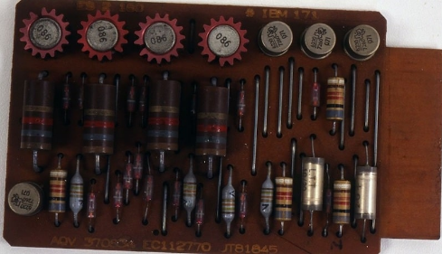

Segunda Generación
|
La segunda generación de computadoras abarca entre 1956 y 1963, y se produjo tras la sustitución de las válvulas de vacío por transistores. Este cambio permitió fabricar aparatos mucho más pequeños y de mucho menor consumo eléctrico.
Aunque seguían utilizándose las tarjetas perforadas, estas fueron las primeras computadoras que dispusieron de un lenguaje específico para programarlas, conocido como “lenguaje ensamblador”. En él, se daba una representación simbólica al lenguaje de máquina de la generación anterior, pero no llegaba a ser un lenguaje de alto nivel. Entre los más conocidos, estuvo el lenguaje Fortran, desarrollado por IBM en 1957. Asimismo, uno de los modelos más exitosos de esta generación informática fue la IBM 1401 Mainframe, una máquina voluminosa y costosa de la que se vendieron alrededor de 12.000 unidades, todo un éxito de mercado para 1959. |

La segunda generación sustituyó las válvulas de vacío por transistores. |
| Inicio | Índice | Subíndice |